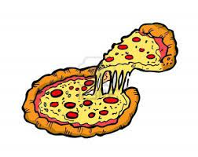

My name is Jasmine Irizarry. I am born and raised from Chicago Illinois on the north side. I am 21 years old and I am the middle child of 3 girls and also have a 9 year old brother in Puerto Rico. I love cats and dogs and love my purple hair. I recently had my hair a blue and greenish color but wasnt feeling it. I also love Puerto Rican and Mexican food. My favorite food is Deep Dish Pizza OR any kind of pizza (yes including 4 Hawaiian Pizza LOL)I have been in a happy relationship with my amazing boyfriend for the last 7 1/2 years. Since 2014, he has been such a huge part of my life, even through the bad. I am a Computer Science and Information Systems major at National Louis University and my Concentration is Data Analytics. I am 100% Puerto Rican. I am going to be a first generation to graduate from a 4 year college. I have many hobbies that not a lot of people know about. I have been crocheting for about 5 years now. I have been streaming for a little over a year and I love PC gaming. I have had trouble making friends throughout high school and college because I am an introvert and have a super quiet side. I remember getting super nervous doing ice breakers. At my mom's house, there are three cats and two dogs. My mom has rescued all except one of the dogs from an organization through her vet carrer. Pets have also gotten me through many things I do consider pets to be a sort of therapy. My favorite breed of dogs are corgis, australian shepherds, black/chocolate Labs, and golden retrievers. I also love mancoon cats. (The cats at my moms house are mancoon breed except one)
